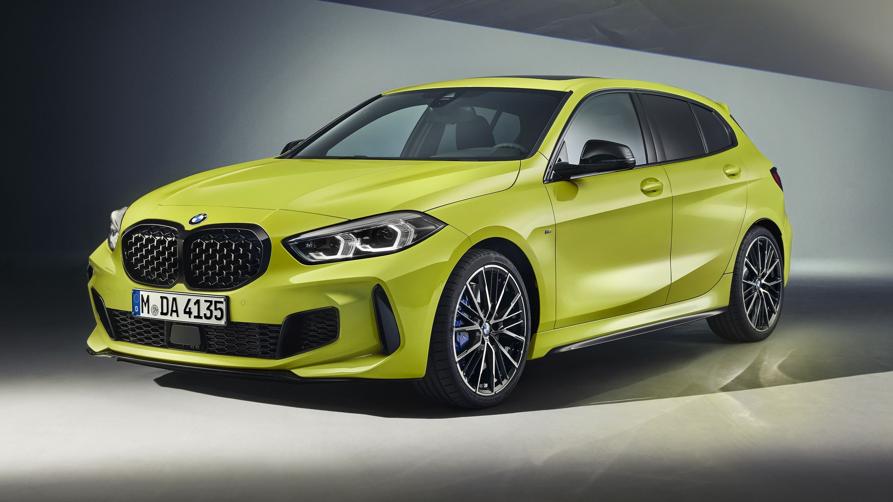
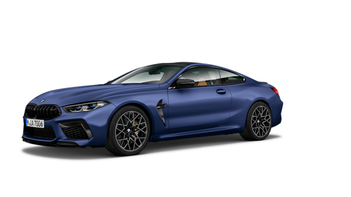

BMW fue fundada en 1916 como fabricante de motores de avión durante la Primera Guerra Mundial. Después del tratado de Versalles, la empresa se vio obligada a cambiar su enfoque hacia la fabricación de motores para vehículos y motocicletas. El primer automóvil BMW fue producido en 1928.


BMW M135i xDrive
Más rendimiento, estilo y placer de conducir: el BMW M135i xDrive no ha llegado para ponerse a prueba, sino para marcar la pauta. Lo demuestra su exterior con detalles llamativos, como la parrilla doble específica para el BMW M135i xDrive con diseño de rejilla, el spoiler trasero M o los dos tubos de escape de 100 mm. El BMW M135i xDrive también establece nuevas referencias en carretera: la combinación del diferencial M Sport de serie, el sistema BMW xDrive, el cambio deportivo Steptronic y la dirección M Sport lo convierten en el mejor vehículo de su clase en cuanto a agilidad y comportamiento en las curvas.

BMW M8 Competition Coupé
El BMW Serie 8 Coupé es un expresivo coupé deportivo que, con componentes avanzados del motor y la suspensión, garantiza un placer de conducir dinámico con un elevado confort de marcha. Descubre la síntesis perfecta de exclusividad y prestaciones.